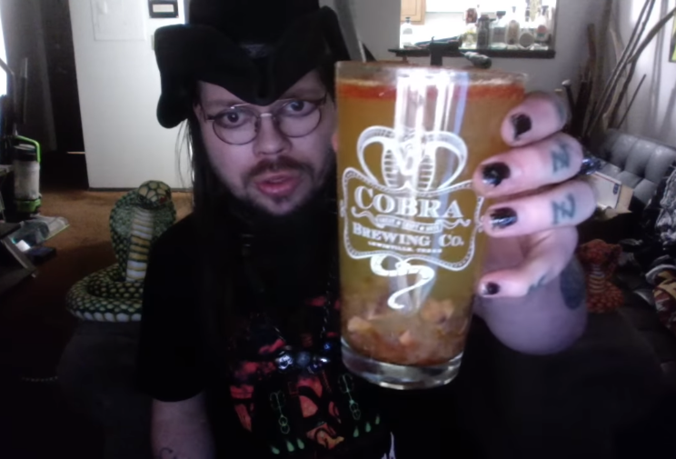

Spicy Squid

Description:
Make this drink and drink it >:)
Ingredients:
- 4 oz GOYA Jumbo Squid in Hot Sauce
- 1/2 cup Lester Fixins' Mustard Flavored Soda Pop
- 1/2 cup Pacifico Beer 24oz Can
- 1/2 cup Gatorade lime cucumber flavor
- Splash of mustard soda
- splash of Gatorade lime cucumber flavor
Steps:
- First, take a sip of Lester Fixins Soda and make sure it really tastes like Mustard. Once you know it’s not bullshit, move onto the next step below:
- Pour the entire GOYA Jumbo Squid into a cobra-themed pint glass. Some extra room is required for the other ingredients, so use a fork to eat some of the squid and oils from the glass. Stop eating when roughly a quarter of the glass is filled./li>
- Next, pour in the Lester Fixins soda. Then, pour in the Lime Cucumber Gatorade. It’s not finished yet, but start drinking some anyway. Next, pour in the Pacifico Beer. Finally, add a splash of Lester Fixins AND a splash of Lime Cucumber Gatorade to top it off.
- Before you start chugging away at this gnarly-looking drink combo, let it stoop and get all funky in the glass. Enjoy!